Teseo2 User Manual
Turn the Eldest Seismograms into the Electronic Original Ones - 2.0.16
Stefano Pintore, Matteo Quintiliani
Istituto Nazionale di Geofisica e Vulcanologia, Roma, Italy
* * *
This documentation needs further updates.
Revision: 1.61 - Date: 2006/08/08 08:19:21
Please, check last revision at
http://teseo.rm.ingv.it/
This document is the user manual of Teseo2 software - Copyright © 2005 - Stefano Pintore, Matteo Quintiliani.
Revision: 1.61 - Date: 2006/08/08 08:19:21 .
Teseo2 is a software tool for seismogram digitization/vectorization and it is developed in the framework of the Sismos project [Michelini and the Sismos Team, 2005] at Istituto Nazionale di Geofisica e Vulcanologia (Italy).
This name was inspired by the myth of Theseus and it is also an acronym for Turn the Eldest Seismograms into the Electronic Original Ones.
Teseo2 is a plug-in for GIMP - GNU Image Manipulation Program - that extends its functionalities for seismological studies. The GIMP is a multiplatform photo manipulation tool freely distributed. It works on many operating systems, in many languages.
Teseo2 allows primarily for:
- additional operations on the vectorized trace (i.e. resampling and alignment)
- supervised vectorization algorithms (colour weighted mean)
- analysis after trace vectorization, such as curvature correction and time realignment
- trace import/export in several formats (such as SAC, SVG, DXF, ASCII, Timemarks distances).
In order to keep track of the stages and parameters of a seismogram vectorization, Teseo2 is able to write this information into the image saved in xcf format.
Teseo2 is developed following the ''Open-Source'' philosophy and it is freely distributed under GPL license. It is cross-platform and the sources, the binaries for Linux, Windows and Mac OS X, are periodically updated on the Sismos web site.
Official web site: http://teseo.rm.ingv.it/
Developer e-mail: teseo@ingv.it
User mailing-list: teseo-user@yahoogroups.com
ML archive: http://groups.yahoo.com/group/teseo-user/
Before installing Teseo2 you need to install GIMP 2.2. Teseo2 has never been tested on GIMP 2.0.
Please refer to the official website at http://www.gimp.org/, user manual [Gimp, 2005] and books [Bunks, 2000], [Kylander and Kylander, 1999], for any information about it.
Teseo2 is developed on Linux but binaries are also available for other platforms such as Windows and Mac OS X.
You can be able to compile Teseo2 on every system where GIMP has been successfully installed.
Sources and some binary distributions can be downloaded at the official web site, http://teseo.rm.ingv.it/
In this manual we provide basic information to install Teseo2 plug-in. For specific information, please follow instructions contained in the INSTALL file for your distribution.
Teseo2 is mostly developed in C language, one library is written in Fortran. In order to compile Teseo2 you need gcc, g77 and libg2c.
In general, Teseo2 works with GIMP 2.2, although version 2.2.6 or newer is recommended.
We develop Teseo2 using GTK+ and GLib.
GTK+ is a library for creating graphical user interfaces.
GLib is a general-purpose utility library, which provides many useful data types, macros, type conversions, string utilities, file utilities, a main loop abstraction, and so on. The versions of GTK+ and GLib are the same used by GIMP.
Moreover, Teseo2 use a GTK+ widget called GtkDataBox which has been designed to display large amounts of numerical data fast and easy.
Version greater than 0.4.0 is required.
Please, refer to the section 8 for downloading and documentation about GtkDataBox.
Teseo2 sources are subdivided into three separate modules: two libraries (gtk-addons, newuoa) and the GIMP plug-in (teseo-2).
Unpack the file teseo-2.x.x.tar.gz and compile the source modules following this order: gtk-addons, newuoa and teseo-2.
You can use the stardard command sequence:
|
./configure |
|
make |
|
make install
|
For teseo-2, you should launch the configure script with the same prefix of gimp-2.2 and, optionally, set the datadir. For example, if gimp-2.2 is configured with --prefix=/mydir, you have to use:
|
./configure --prefix=/mydir --datadir=/mydir/share/gimp/2.0
|
First of all, install GIMP. Version 2.2.6 or newer is recommended.
Unpack the binary distribution from teseo-2.x.x-bin-linux.tar.gz and run these commands to install Teseo2:
|
cd teseo-2.x.x-bin-linux |
|
./setup.sh linux
|
setup.sh needs gimptool-2.0 included in GIMP distributions.
To uninstall run:
|
cd teseo-2.x.x-bin-linux |
|
./setup.sh linuxuninstall
|
- Pre-requisite
- Install gimp-2.2.6 or newer : files and instructions at http://gimp-win.sourceforge.net/
- (Optional) Install gimp-help
- Install teseo-2
- Close GIMP
- Extract teseo-2.x.x-setup.exe from the distributed teseo-2.x.x-setup.zip
- Run teseo-2.x.x-setup.exe
- Start GIMP
To install Teseo2 on Mac OS X you have 2 possibilities.
- Download DMG image that contains Gimp.app with teseo-2 bundled
(DMG image is about 72 MB)
- Download binary distribution pack and use shell script configuration:
(Distribution is about 1 MB)
First of all, install GIMP. Version 2.2.6 or newer is recommended.
Unpack binary distribution teseo-2.x.x-bin-macosx.tar.gz
|
cd teseo-2.x.x-bin-macosx |
|
./setup.sh macosx /Applications/Gimp.App
|
To uninstall run:
|
cd teseo-2.x.x-bin-macosx |
|
./setup.sh macosxuninstall /Applications/Gimp.App
|
If Gimp.app doesn't reside in Applications folder, change it with the correct path.
Teseo2 works only on grayscale images and it could work on any image format manageable by GIMP.
We prefer working only on xcf format, the GIMP proprietary format, for several reasons:
- xcf can save layers, channels and paths.
- xcf can put up ''parasites'' arbitrary pieces of data which can be attached to various GIMP objects. Teseo2 is able to import/export all information about seismogram and vectorization within the xcf file.
- xcf natively supports gzip and bzip2 compression.
To start Teseo2 you have to:
- Start GIMP.
- Open seismogram image. The image must be converted in grayscale (Image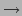 Mode Grayscale in GIMP context) and then saved in xcf format.
- Select Teseo-2 from Teseo menu
(figure 1). Alternatively, you can use the context menu on the image (right-clicking) or by a customized shortcut.
Warning: When Teseo2 is launched, it is automatically ''linked'' to the image by the GIMP. We suggest to vectorize one image at a time and to respect the following order using Teseo2: open image, open Teseo2, close Teseo2, close image. The name of the image is visible in the main window of Teseo2.
If you close the image before Teseo2, then close Teseo2 before reopening the image. Moreover, if you rename the image, Teseo2 work well but the references to the correct session are lost. In this case, we strongly recommend to open Teseo2 only after renaming the image.
Warning: If Teseo2 crashes or GIMP is closed before Teseo2, the session linked to the image remains locked. Next time you open Teseo2 on the same image, a warning message will be shown asking for forcing the session unlock. This mechanism is useful to prevent multiple instances of Teseo2 for the same image: only one instance for each image is allowed for a correct vectorization.
Teseo2 associates to the image some information related to seismogram paper, seismic event, station data and vectorization parameters. This information is saved in a session and it is referred to a single seismic event.
When you start Teseo2 for the first time on an image, you are required to create a new session. Fill the fields shown in the figures 2, 3, 4, and click OK.
Session properties can be modified at any time selecting File Session Properties (Ctrl+P in Teseo2 context). New sessions related to other events in the same image can be created selecting File Session New (Ctrl+N in Teseo2 context). The user can not change session file name because Teseo2 uses a fixed session naming convention.
Files related to the session are stored in gimp_directory/teseo-2, where gimp_directory is the user-specific GIMP settings directory. Usually, it is the subdirectory .gimp-2.2 in the user home directory.
When Teseo2 is started on an image associated to more sessions, the user can choose the preferred one.
All the parameters described below are saved in the session file and, on demand, they can be imported or exported in Teseo2 parasites (section 3.2) and saved in the xcf image.
Figure 2:
Session window - Record tab
|
In figure 2 are shown the parameters associated to the seismic record.
- Date: date of recording.
- Event number: arbitrary ordinal number which identifies the event contained in the image. Use it to distinguish several events on the same image or date.
- Station data: the following parameters will be saved in SAC files.
- Name: station code.
- Azimuth: component azimuth (degrees clockwise from north).
- Incident angle: component incident angle (degrees from vertical).
- Latitude: station latitude (degrees, north positive).
- Longitude: station longitude (degrees, east positive).
- Elevation: station elevation (meters).
- Paper speed: linear velocity of the paper [mm/min].
- Image file: name of the current image (read-only).
- Resolution: image resolution (read-only).
Figure 3:
Session window - Traces tab
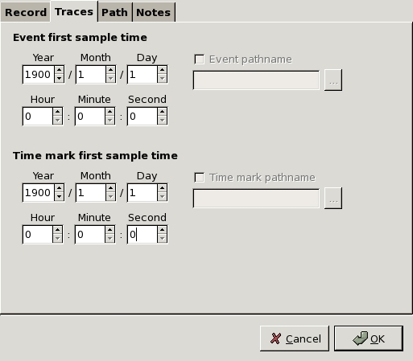
|
In figure 3 are shown the parameters associated to the traces.
- Event first sample time: time of the first sample of the trace, this value will be saved in SAC files.
- Time mark first sample time: time of the first sample of the trace that represents the time mark.
Figure 4:
Session window - Path tab
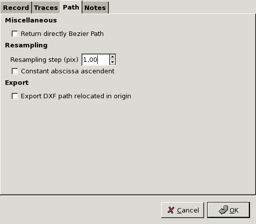
|
In figure 4 are shown the parameters associated to the path manipulation.
- Return directly Bézier path: if checked, when you use automatic vectorization methods, Path Fit is executed after every group of iterations.
- Resampling step: samples are always evenly spaced with this distance in pixel.
- Constant abscissa ascendent: if checked, X-values of the returned samples are strictly increasing, else X-values are evenly spaced regardless direction.
- Export DXF path relocated in origin: if checked, DXF export will translate the path starting a the coordinate (0, 0). This option is needed only for Sismos procedures.
3.2 Teseo parasites
In order to share and distribute results about the vectorization of a seismogram, Teseo2 includes all information related to the seismogram and his vectorization within a single file. This can be made using GIMP proprietary image format: the xcf format.
In fact, xcf format stores paths, layers, channels and ''parasites'',
a mechanism provided by GIMP for attaching arbitrary pieces of data to an image.
Teseo2 parasites contain all parameter values for the current session. When you import or export a session as parasites you have to consider the Event number (see figure 2). Remember that Event number is arbitrary and it could be thinked as the ordinal number associated to the sequence of the events occurred in the same Date. You can export only one set of the parameters for each single event.
Parasite operations are:
- Parasite Import: import the n-th event contained in the xcf image into the current session.
- Parasite Export: export all parameters of the current session into the xcf image as parasite.
- Parasite Remove all: remove all Teseo2 parasites contained in the xcf file.
Warning: When parasites related to an image are modified, remember to save the image before closing it. GIMP won't give you any advice before leaving the image.
Teseo2 trace vectorization completely relies on GIMP Path tool, which permits to create piecewise cubic Bézier curves and polygonals. Please, see [Gimp, 2005] for basic usage.
Warning: Teseo2 does not support closed paths.
Warning: Seismogram must be oriented from left to right and top to bottom. If necessary you can use GIMP tools such as Flip or Rotate to modify the image ;-)
4.1 Multiple components in a path
Warning: Unfortunately, GIMP plug-in developers do not have yet available procedures (API) to handle paths with two or more components. User must not create multiple components in a single path.
If you accidentally generate a path containing multiple components you can combine them following these steps:
- Export the path in SVG format using the GIMP Path Dialog.
- Import the path using the Teseo2 Menu File Path Import SVG Combine. This procedure import the path and link sequentially the components each other.
- The previous steps could reverse the points order of the path. In this case use Path Flip in the Teseo2 main window.
You can manually vectorize the traces by GIMP Path tool creating several piecewise cubic Bézier curves or polylines.
You should improve your manual dexterity before facing up to a complicated seismogram. Inside the distribution you find a very simple piece of seismogram to test your skill, the file name is example.xcf.gz. Keep in mind that the whole vectorization is based on GIMP Path tool and it is wise to learn as much as possible about it.
example.xcf.gz contains a few paths manually made and others made by the Teseo2 colour weighted mean algorithm, which will be described in the next section 4.3.
4.3 Automatic
Teseo2 is designed to easily add algorithms for automatic seismogram vectorization.
An iterative procedure takes place whereby at each step the
algorithm is executed providing it with:
- a rectangular portion of the image centred at the last point of the current path;
- information regarding the closest previous points;
in order to find the next point.
Presently, Teseo2 uses an algorithm based
on a weighted mean of the trace colour (see subsection 4.3.1)
In future versions of Teseo2 more algorithms should be available (neural network approach too) and will be associated to other buttons beside CWM one.
In figure 5 the main parameters of Teseo2 automatic path vectorization tool are shown:
- Forward: algorithm stop condition, maximum iteration number.
- Back: number of points to delete from the current path.
- Stop to the first guide: alternative stop condition, the iterations stop when the abscissa is greater than first vertical guide position.
- Trace colour: base trace colour (black or white).
- Trace thickness: thickness average in pixels.
The arrow buttons on the main window become sensitive when the user chooses an algorithm to execute.
To calculate the next point, the algorithm can use the additional information provided by the user who suggests a direction clicking on arrow buttons.
4.3.1 Colour Weighted Mean
For detailed information about this algorithm read [Pintore et al., 2005].
The colour weighted mean algorithm takes a rectangular region of the image having width and height specified in tab shown in figure 6 and centered into the last point of the current path.
This algorithm is activated clicking on the colour weighted mean button on the toolbar in figure 5.
The arrow buttons are available to suggest the direction.
Figure 5:
Teseo window - General tab
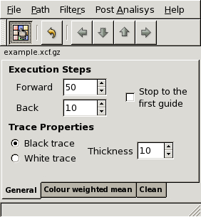
|
Figure 6:
Teseo window - Colour weighted mean tab
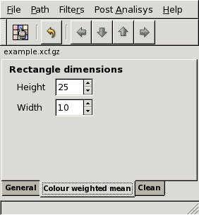
|
Besides GIMP Path manipulation, Teseo2 adds some useful operations in seismogram vectorization.
In figure 7 is shown the Teseo2 Path menu. The operations are subdivided in three groups: operations on the current path, operations on all unlocked paths and operations on path that represent Timemark.
Some operations rely on GIMP vertical guides tool: you can place a vertical guide clicking on the ruler on the left of the image window and
dragging it onto the image at the desired place.
- Current path operations
- Path Resample: resample path with parameter defined in figure 4.
- Path Fit: fit path with a piecewise cubic Bézier curve.
- Path Split: split path at points defined by intersection beetwen path and GIMP vertical guides.
- Path Force Polyline: transform a path in a polyline. All the control points will be ignored.
- Path Flip: change the order of points in the selected path in the GIMP internal representation. Paths with the incorrect internal representation (with reversed order) could be created manipulating Paths with more than one component. Using them in Align unlocked paths and in Link unlocked paths give wrong results. Use Path Flip to restore correct points order.
- Path Snap: for each point compute a colour weighted mean in a thickness width square (figure 5).
- Unlocked only paths operations
- Align unlocked paths: align paths overlapping the first point of the next path to the last of the previous one.
This is the case when
the event is recorded over the paper margin and the trace lies on different lines.
This operation must be used before exporting the whole trace.
- Link unlocked paths: link paths with a straight line from the last point of the previous path to the first point of the next one. Useful to join several paths of the same event.
- TimeMark
- Timemark - Evaluate intermediate TMs: evaluate missing intermediate timemark of the current path and return vertical guides where they should be.
- Timemark - Add TMs from guides: add points where the guides intersect the current path.
Figure 7:
Teseo window - Path menu
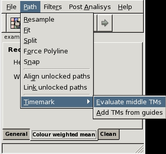
|
Warning: Order in operations on multiple paths respects order of the GIMP Path tool, that is from bottom to top.
For example, executing a link on paths shown in figure 8 results in a new path concatenating paths a, b and c in this order.
Figure 8:
GIMP Path Tool - Path order
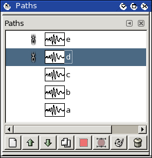
|
Teseo2 imports and exports several file formats:
- SVG: Scalable Vector Graphics [SVG Working Group, 2003].
- DXF: Drawing Interchange File Format [Autodesk, 1992].
- Trace: Teseo2 proprietary ascii format. It contains image reference and coordinate in pixels. Only polylines.
- ASCII: plain text file that contains the coordinates (x,y) sequence in millimeters. Only polylines.
- SAC: Seismic Analysis Code [Goldstein et al., 2003]. Evenly spaced binary SAC. Only polylines.
- SISMA: plain text file ''Sismogrammi Storici'' software compliant.
- Timemark: plain text file that contains coordinates (x,y) sequence identifying timemarks.
- Bézier: GIMP 1.0 Bézier path format. For downward compatibility.
- Examples: binary format that contains information for neural networks learning. Not available yet.
Up to now, SVG export is possible only by GIMP Path tool, DXF import is possible only on Teseo2 exported paths, SAC import is not implemented yet.
GIMP offers a variety of filters and instruments to manipulate images. We strongly recommend to enhance the ''readability'' of your seismogram before vectorize. For example you could increase the contrast of the image.
Warning: If you want save the history of the changes applied to the image, you may apply the filters on copies of the ''Background Layer''. Remember that all operations usually work on the current layer which could not necessarily be the visible one.
At the moment, Teseo2 provides a graphical filter useful to clean a seismogram.
What do we intend to clean a seismogram? Often, before vectorizing, it is advantageous to remove horizontal traces
crossing it while mantaining trace continuity.
The main idea is to fill unwanted horizontal or vertical segments with the background color of the seismogram.
Warning: Good results are obtained when the noisy lines are perfectly horizontal. You can estimate required rotation using GIMP Measure tool and then using GIMP Rotate trasformation tool to rotate effectively. See GIMP help.
In figure 9 it is possible to see the parameters related to the clean filter.
Figure 9:
Teseo Filter Clean
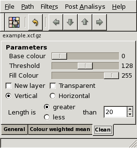
|
- Base colour: is the base colour of the trace. Value from 0 (black) to 255 (white).
- Threshold: is the maximum value of tolerance on base colour.
- Fill colour: is the colour used to fill contiguous lines belonging to the colour condition.
- New layer: if checked, the current layer will be copied and the filters will be run on the copy.
- Transparent: if checked, only the filled lines will be displayed, rest of the image will be transparent. This works only on layer with alpha channel.
- Horizontal/Vertical: choose one to fill horizontal or vertical line.
- Greater/Less: choose one to fill lines longer or shorter than length.
- Length: length of a single line on the image.
If you've never used this filter you should try it on the example image contained in your Teseo2 distribution.
Follow these steps:
- Open example.xcf.gz
- Select the ''Background'' layer inside the GIMP Layer Dialog and apply the filter using the following parameters:
- Base Colour = 0
- Threshold = 128
- Fill Colour = 255
- New layer checked
- Transparent uncheked
- Vertical checked
- Less checked
- Length = 9
- A layer named ''Background copy'' will be created.
- Select the ''Background'' layer and apply the filter using the following parameters:
- Base Colour = 0
- Threshold = 200
- Fill Colour = 255
- New layer checked
- Transparent uncheked
- Horizontal checked
- Greater checked
- Length = 28
- A layer named ''Background copy #1'' will be created.
- Select the layer named ''Background copy'' and set the layer parameter Mode to Multiply.
Nice! Isn't it?
An animation of this operation is available on http://teseo.rm.ingv.it/filters/.
The seismogram curve on the image has to be corrected to become a seismic data with right amplitude and time.
There are many errors that could be introduced during the digitization procedure that must be taken into account.
- Rotation of the sheet during image scanning is a first error that can be easily removed using Gimp Rotation tool with the correct angle.
- To obtain data as a sequence of samples and corresponding time a scaling related to the paper speed is always needed.
Several different corrections have to be applied too in order to eliminate errors due to the recording system of the seismograph.
- Instruments with photographic recording suffer from a trace distortion due to the spiral trend on the seismogram paper. This trend is further removable with other analysis instruments like SAC2000 [Goldstein et al., 2003]. This distorsion applies to all-mechanical recording systems too, like the Wiechert seismographs.
- Mechanical recording systems suffer from a curvature of the seismic trace, worst in case of great amplitude signal, due to the finite arm lenght and finite radius of the cylinder bearing the smoked paper. To correct this kind of distortion, Teseo2 offers an instrument able to create a new path starting from a curved one. The algorithm used by Teseo2 is taken from Cadek [Cadek, 1987] , while the code we use was originally written in Fortran by A. Schlupp. The algorithm needs some parameters, for a few of them Teseo2 offers some other instruments to evaluate.
These instruments are derived from a personal comunication provided by [Schlupp, 2006] which is going to be published.
For semplicity we suppose that speed is a constant for the path segment we consider, otherwise we can subdivide path in segments at constant speed, for example from a time marker to the subsequent. Then we can correct the resulting paths one by one.
Figure 10:
Mechanical recording schema.
Figure provided by A. Schlupp.
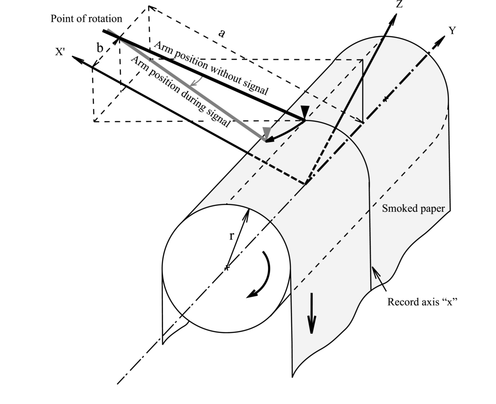
|
The formula for correction of the deformation due to the geometry of the recorder, as well as coordinate conversion (x,y) in time and amplitude, are given by Cadeck:
where:
R = length of the writing arm, from its rotating axis to the tip of the needle
r = radius of the drive cylinder bearing the smoked paper
a = distance from the rotating arm axis to the driving cylinder axis
b = shift of the arm axis, in millimeters, to the base line on the smoked paper
d = minute length on the original record in millimeters
x(i) = coordinate to transform in seconds for time axis
y(i) = coordinate to transform in millimeters for amplitude axis
This formula applies to intruments modeled as in the schema shown in figure 10.
To use this formula, it is necessary to get information about the seismogram. For well known machinery, r, R and a can be retrieved from manufactory papers (figure 10). Otherwise it is possible to adjust these parameters to reasonable values by trial and error. The d value is proportional to speed and resolution.
Figure 11:
Mechanical recording schema, details on b.
Figure provided by A. Schlupp.
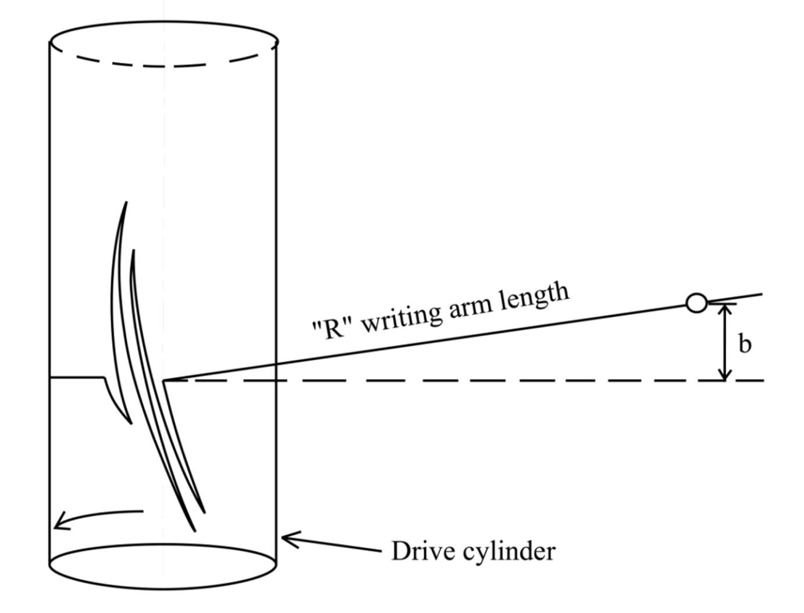
|
The b value is the most difficult to determine and must be deduced directly from records, see figure 11. A detailed description of the method to evaluate b is available in [Schlupp, 2006].
Figure 12:
Curvature Correction window
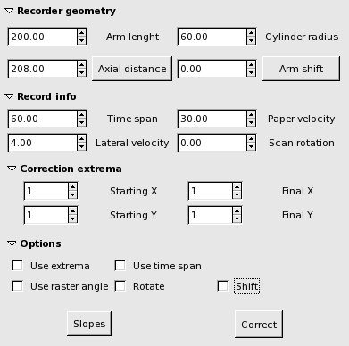
|
Look at figure 12, showing the Curvature Correction window. You obtain this window clicking on Curvature Correction from Post Analysis.
- Recorder geometry
- Arm length entry: Enter the arm length value here.
- Cylinder radius entry: Enter the cylinder radius value here.
- Axial distance entry: Enter the axial distance value here.
- Axial distance button: Clicking on Axial distance button you obtain a calculation of a according to r and R, useful when a is unknown.
- Arm shift entry: Enter the arm shift value here.
- Arm shift button: Clicking on the Arm Shift button a "best" value of b will be calculated and showed in the Arm shift entry.
A plot of the error function calculated in a reasonable range of b will be shown: see figure 13.
You can choose an alternative b value, presumably around the minimum of the function. The plot is interactive: you can zoom in selecting an area and then clicking the central mouse button. Right click to zoom out. Click on a point in the plot to select the abscissa, the value is displayed in the Marked point field. Click on Choose to save it in the Arm shift entry.
- Record info
- Time span entry: Time span from first to last point of the current path. Not required unless you select Use time span.
- Paper velocity velocity: Average speed of the paper for the current path. Required unless you select use Time span.
- Lateral velocity: Average lateral speed of the paper for the current path. Not required unless you select Shift
- Scan rotation: use it to compensate for a rotation introduced during the scanning phase - angles are positive clockwise. The correction is applied at the beginning of calculations. Not required unless you select Rotate
- Correction extrema
- Starting X: First point abscissa, not required unless you select Use extrema.
- Starting Y: First point ordinate, not required unless you select Use extrema.
- Final X: Last point abscissa, not required unless you select Use extrema.
- Final Y: Last point ordinate, not required unless you select Use extrema.
- Options
- Use extrema: To use the user provided coordinates of the first and last point of the path. Useful for images with unknown scale.
- Use time span: If you know exactly this time you can provide it to the algorithm. It will be used to calculate the speed.
- Use raster angle: To use the user provided error angle in scanning. If not checked the possible rotation angle will be calculated from the path.
- Rotate: Check to apply the rotation correction.
- Shift: Check to apply the lateral speed distortion correction.
- Slopes button: Click on Slopes button to plot the histogram of the slopes for the given b. According to [Schlupp, 2006] the slope should be
 or at his minimum at 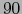 degree for the correct Arm shift.
or at his minimum at 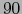 degree for the correct Arm shift.
- Correct button: Click on Correct button to obtain a new path corrected applying the Cadeck formula with the parameters selected for the current path.
Figure 13:
Plot of the function Error(b)
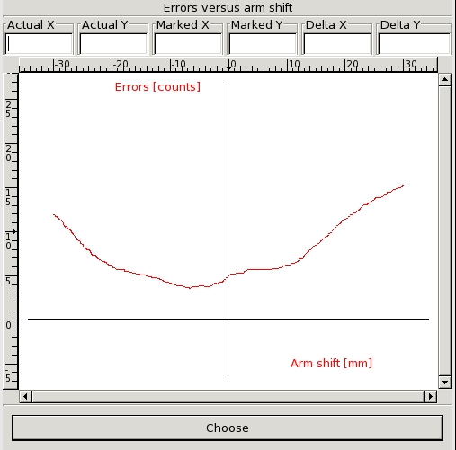
|
Before closing GIMP is a very good practice to:
- Save session (Ctrl+S in Teseo2 context)
- Close Teseo2.
- Save xcf file, it contains all your paths, layers and Teseo2 parasites. xcf is your friend and gzip or bzip2 too.
- Close GIMP.
If you would like to:
- know news about Teseo2
- suggest further improvements
- exchange experiences with others Teseo2 users
- help the developers to improve Teseo2 and make it more stable
at the moment, the best way is subscribing the mailing list devoted to the Teseo2 users: feel free to send an e-mail to teseo-user-subscribe@yahoogroups.com . However, the archive of the messages is open to everybody at http://groups.yahoo.com/group/teseo-user/
Teseo2 is not a bug-free application, so if you find a bug, please report it sending an e-mail to teseo@ingv.it
Please, remember to specify:
- Operating system
- i.e.: Windows XP, Linux Distribution, Mac OS X version, ...
- Teseo version
- Teseo version looks like 2.x.x
You find it in About window following Help About in Teseo menu.
- Kind of Teseo distribution
- Source code, zip or tarball binaries, dmg image, ...
- GIMP-2.2 version
- GIMP version looks like 2.2.x
- A detailed bug description
We will provide a bug tracking system if necessary.
8 Credits
Teseo2 source distribution contains code developed by other authors
and distributed respecting their copyright or license:
- Curvature correction - Curvature correction of Wiechert records is based on studies and Fortran routines developed by Antoine Schlupp. Within Teseo2, Fortran routines have been ported in C.
Author: Antoine Schlupp (antoine.schlupp@eost.u-strasbg.fr)
- NEWUOA - NEWUOA is a software developed by M.J.D. Powell for unconstrained optimization without derivatives.
Author: M.J.D. Powell (mjdp@cam.ac.uk)
- cfortran.h - cfortran.h is an easy-to-use powerful bridge between C and FORTRAN. It provides a transparent, machine independent interface between C and FORTRAN routines and global data. http://www-zeus.desy.de/~burow/cfortran/
Author: Burkhard Burow (burow@desy.de)
Main package dependencies are:
We would like to thank A. Schlupp for his contribution
in the Curvature Correction development.
We are also grateful to A. Michelini for his continuous encouragement
and to S. Mazza for his useful and constructive suggestions.
In this section are resumed all warnings contained in the manual.
starttoclow
- Autodesk, 1992
-
Autodesk (1992).
AutoCAD Release 12 DXF Format.
Adobe Systems Incorporated - 1585 Charleston Road - P.O. Box 7900 -
Mountain View, CA 94039-7900.
Drawing Interchange and File Formats Release 12.
- Bunks, 2000
-
Bunks, C. (2000).
Grokking the GIMP.
New Riders Publishing, Thousand Oaks, CA.
352pp.
- Cadek, 1987
-
Cadek, O. (1987).
Studying earthquake ground motion in prague from wiechert seismograph
records.
Gerl. Beitr. Geoph., 96:438-447.
- Gimp, 2005
-
Gimp (2005).
GNU Image Manipulation Program User Manual.
The GIMP Documentation Team.
URL http://docs.gimp.org/.
- Goldstein et al., 2003
-
Goldstein, P., Dodge, D., and Firpo, M. (2003).
SAC2000: Signal processing and analysis tools for seismologists and
engineers.
In Lee, W., Kanamori, H., Jennings, P., and Kisslinger, C., editors,
International Handbook of Earthquake & Engineering Seismology, Part B,
pages 1613-1614, New York. Academic Press.
- Kylander and Kylander, 1999
-
Kylander, O. and Kylander, K. (1999).
Gimp the Official Handbook with Cdrom.
Coriolis Value.
895pp.
- Michelini and the Sismos Team, 2005
-
Michelini, A. and the Sismos Team (2005).
Collection, digitization and distribution of historical seismological
data at ingv.
EOS, 86(28).
- Pintore et al., 2005
-
Pintore, S., Quintiliani, M., and Franceschi, D. (2005).
Teseo: a vectoriser of historical seismograms.
Computers & Geosciences, 31(10):1277-1285.
- Schlupp, 2006
-
Schlupp, A. (2006).
Personal communication.
- SVG Working Group, 2003
-
SVG Working Group (2003).
Scalable Vector Graphics (SVG) 1.1 Specification.
URL http://www.w3.org/TR/2003/REC-SVG11-20030114/.
- Buttons
- Arm Shift
- 5.1
- Arm shift button
- 5.1
- Axial distance
- 5.1
- Axial distance button
- 5.1
- Correct
- 5.1
| 5.1
- OK
- 3.1
- Slopes
- 5.1
| 5.1
- File formats
- ASCII
- 1
| 4.5
- Bézier
- 4.5
- DXF
- 1
| 3.1
| 4.5
| 4.5
- Examples
- 4.5
- SAC
- 1
| 3.1
| 3.1
| 4.5
| 4.5
- SISMA
- 4.5
- SVG
- 1
| 4.1
| 4.5
| 4.5
- Timemark
- 4.5
- Trace
- 4.5
- xcf
- 1
| 3
| 3
| 3
| 3
| 3
| 3
| 3.1
| 3.2
| 3.2
| 3.2
| 3.2
| 3.2
| 6
| 6
- Filters
- clean
- 4.6
| 4.6
- GIMP
- 1
| 2
| 2
| 2
| 2.1
| 2.1
| 2.1
| 2.2
| 2.2
| 2.3
| 2.3
| 2.4
| 3
| 3
| 3
| 3
| 3
| 3
| 3
| 3
| 3.1
| 3.2
| 3.2
| 3.2
| 3.2
| 4
| 4
| 4
| 4.1
| 4.1
| 4.1
| 4.2
| 4.2
| 4.4
| 4.4
| 4.4
| 4.4
| 4.4
| 4.4
| 4.4
| 4.4
| 4.5
| 4.5
| 4.6
| 4.6
| 4.6
| 4.6
| 4.6
| 4.6
| 4.6
| 4.6
| 6
| 6
| 7.1
| 7.1
- GIMP tools
- Flip
- 4
| 4
- Measure
- 4.6
| 4.6
- Path
- 4
| 4.2
| 4.2
| 4.4
| 4.4
| 4.4
| 4.5
- Rotate
- 4
| 4
| 4.6
| 4.6
- GLib
- 2.1
| 2.1
| 2.1
- GTK+
- 2.1
| 2.1
| 2.1
| 2.1
- Keywords
- CWM
- 4.3
- parasites
- 3
| 3.1
| 3.2
| 3.2
| 3.2
| 3.2
| 6
- seismic event
- 3.1
- session
- 3.1
| 3.1
| 3.2
| 3.2
- Menu
- Curvature Correction
- 5.1
| 5.1
- Post Analysis
- 5.1
- Teseo
- 3
- Teseo-2
- 3
- Parameters
- a
- 5.1
| 5.1
| 5.1
| 5.1
- Arm length entry
- 5.1
- Arm shift entry
- 5.1
| 5.1
- Axial distance entry
- 5.1
- Azimuth
- 3.1
- b
- 5.1
| 5.1
| 5.1
| 5.1
| 5.1
| 5.1
| 5.1
| 5.1
| 5.1
- Back
- 4.3
- Base colour
- 4.6
| 4.6
| 4.6
- Choose
- 5.1
- Constant abscissa ascendent
- 3.1
- Cylinder radius entry
- 5.1
- d
- 5.1
| 5.1
- Date
- 3.1
| 3.2
- Elevation
- 3.1
- Event first sample time
- 3.1
- Event number
- 3.1
| 3.2
| 3.2
- Export DXF path relocated in origin
- 3.1
- Fill colour
- 4.6
| 4.6
| 4.6
- Final X
- 5.1
- Final Y
- 5.1
- Forward
- 4.3
- Greater
- 4.6
| 4.6
- Horizontal
- 4.6
| 4.6
- Image file
- 3.1
- Incident angle
- 3.1
- Lateral velocity
- 5.1
- Latitude
- 3.1
- Length
- 4.6
| 4.6
| 4.6
- Less
- 4.6
| 4.6
- Longitude
- 3.1
- Mode
- 4.6
- Name
- 3.1
- New layer
- 4.6
| 4.6
| 4.6
- Paper speed
- 3.1
- Paper velocity velocity
- 5.1
- R
- 5.1
| 5.1
| 5.1
| 5.1
| 5.1
| 5.1
- Resampling step
- 3.1
- Resolution
- 3.1
- Return directly Bézier path
- 3.1
- Rotate
- 5.1
| 5.1
- Scan rotation
- 5.1
- Shift
- 5.1
| 5.1
- Starting X
- 5.1
- Starting Y
- 5.1
- Station data
- 3.1
- Stop to the first guide
- 4.3
- Threshold
- 4.6
| 4.6
| 4.6
- Time mark first sample time
- 3.1
- Time span
- 5.1
- Time span entry
- 5.1
- Trace colour
- 4.3
- Trace thickness
- 4.3
- Transparent
- 4.6
| 4.6
| 4.6
- Use extrema
- 5.1
| 5.1
| 5.1
| 5.1
| 5.1
- Use raster angle
- 5.1
- Use time span
- 5.1
| 5.1
- Vertical
- 4.6
| 4.6
- x(i)
- 5.1
- y(i)
- 5.1
- Software development
- g77
- 2.1
- gcc
- 2.1
- GLib
- 2.1
| 2.1
| 2.1
- GTK+
- 2.1
| 2.1
| 2.1
| 2.1
- GtkDataBox
- 2.1
| 2.1
- libg2c
- 2.1
- Teseo modules
- gtk-addons
- 2.1
| 2.1
- newuoa
- 2.1
| 2.1
- teseo-2
- 2.1
| 2.1
| 2.1
- Teseo operations
- Align unlocked paths
- 4.4
| 4.4
- Link unlocked paths
- 4.4
- Parasite Export
- 3.2
- Parasite Import
- 3.2
- Parasite Remove all
- 3.2
- Path Fit
- 3.1
| 4.4
- Path Flip
- 4.4
| 4.4
- Path Force Polyline
- 4.4
- Path Resample
- 4.4
- Path Snap
- 4.4
- Path Split
- 4.4
- Timemark - Add TMs from guides
- 4.4
- Timemark - Evaluate intermediate TMs
- 4.4
Teseo2 User Manual
Turn the Eldest Seismograms into the Electronic Original Ones - 2.0.16
This document was generated using the
LaTeX2HTML translator Version 2002-2-1 (1.71)
Copyright © 1993, 1994, 1995, 1996,
Nikos Drakos,
Computer Based Learning Unit, University of Leeds.
Copyright © 1997, 1998, 1999,
Ross Moore,
Mathematics Department, Macquarie University, Sydney.
The command line arguments were:
latex2html -style teseo2_user_manual_personal.css -image_type png -show_section_numbers -no_navigation -split 0 -address 'Matteo Quintiliani, Stefano Pintore - teseo@ingv.it' teseo2_user_manual
The translation was initiated by mtheo on 2007-02-09
Matteo Quintiliani, Stefano Pintore - teseo@ingv.it